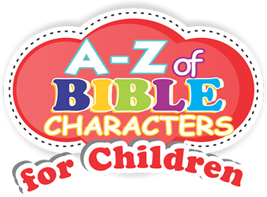
« Previous Page
≡
Menu
Menu
»
Next Page
Next Page
A-Z of Bible Characters for Children
Copyright © 2022 Bunmi Johnson
Copyright © 2022 Bunmi Johnson
All rights reserved.
No part of this publication may be reproduced,
stored in a retrieval system, or transmitted in any
form or by any means, electronic, mechanical,
photocopying, recording or otherwise without the
prior permission of the copyright owner and the
publishers
Published by:
Oxbrandplanet
29, Shipeolu Street, Amoke Shopping Complex
1st Floor, Shomolu-Lagos, Nigeria.
Tel:+234-(0)805-5441-551, (0)817-0767-404.
e-mail: oxbrandplanet@gmail.com,
bunmiroyale@gmail.com
info@biblecharacters.info
www.biblecharacters.info
www.oxbrandplanet.com
The illustrations are rendered in water colour
« Previous Page
≡
Menu
Menu
»
Next Page
Next Page
DEDICATION
F
irstly; I am dedicating this book to God Almighty, in whom by His grace gave me
the strength and wisdom to publish this
book.
To my godfather; Revd. John M. Dansu, who has
been sustaining and encouraging me with
spiritual balance diets. His godly character and
discipline has continued to keep me fit and strong
in the Lord for the earthly task and heavenly
race.
To all my godfather's children in the Lord, that irrespective
of the daunting task still keeps on the vision of
God’s kingdom, so as to win the awaited glorious
crown.
Finally, I extend my deep regards and
appreciation to all my friends, well wishers, and
colleagues. To those whose God's mercy has
touched spiritually for Gods work, and to
all our children who are the hopes of tomorrow.
Surely, you are blessed and the mercy of God
will come upon you all. Amen.
iii
« Previous Page
≡
Menu
Menu
»
Next Page
Next Page
FOREWORD
Bunmi Johnson has done it again!
I
f you thought the first edition was mind blowing, then get ready to be blown away by this workbook edition. The reaction from the first edition was supportive and warm, which gave Bunmi the wings to fly again this time even higher.
This book will inspire readers to bring positive changes in their surroundings as it would help open their minds to the good qualities they must possess to become great leaders. Bunmi highlights great characters in the bible who made themselves available to be used by God which is worthy of emulation. He also portrayed those characters that should not be looked up to as a result of their negative attributes.
I congratulate Bunmi Johnson once again for an amazing work done and strongly recommend this book for every child in the christian and secular environment.
Pastor (Mrs) Ebere Medo-Uwa.
Resident Pastor of
Pentecostal Canaanland Mision
Lagos, Nigeria
Resident Pastor of
Pentecostal Canaanland Mision
Lagos, Nigeria
iv
« Previous Page
≡
Menu
Menu
»
Next Page
Next Page
GODLY CHARACTER
G
OD wants us to train our children in the way they should go, so that when they grow they would not depart from it.
The Bible characters in-view can be seen from 2 perspectives: the
character as a personality and the character as an attitudinal exposition.
The character a child exhibits today is as a result of what the
home, community and the nation has invested in him/her
yesterday. This is the reason the Bible says “what you sow
shall you reap.”
Nevertheless, to “whom much is given, much is expected.” This is
evident i the character of a child like Timothy who came
from the lineage of a Christian family, and eventually became an
evangelist. This is unlike the case of the character of Korah who
rebelled against Moses and Aaron. The attitudes of
these 2 characters mentioned cannot be far-fetched from what their
respective homes, societies and communities have invested in
them from the cradle, which they invariably gave back
respectively to their society. No wonder the great philosopher
and poet William Wordsworth says: “the child is the father of
the man.”
I enjoin parents to invest Godly characters, which is of great value
in their children. I am sure they will reap it back from them in future.
Believe me, this book is not only interesting, it will
also help our children to build Godly characters that will make
them enviable and exemplary individuals in their homes,
societies and the nation as a whole.
Remain blessed.
Remain blessed.
v
« Previous Page
≡
Menu
Menu
»
Next Page
Next Page
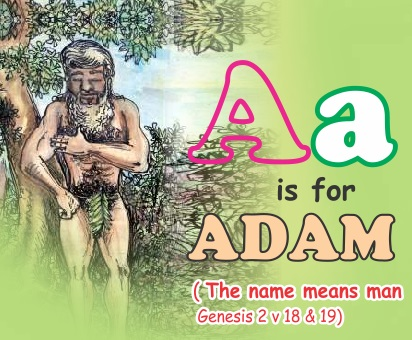
| He was the first man on earth (Genesis 2 v 5 – 7) | |
| He did not have any father or mother. God made him. | |
| He was made from the dust of the earth. | |
| Every man and woman on this earth came from one blood. (Acts 17 v 26) | |
| Adam and Eve were disobedient against God, yet they did not say: “we are sorry” to God. |
LESSONS:
| Since every person was made from one blood (Adam), we should learn to love our neighbour as ourselves. | |
| We all must always learn to say “I am sorry” when we do wrong. |
Eden was the garden where God placed Adam. Draw
a garden and put the various plants and animals.
1
« Previous Page
≡
Menu
Menu
»
Next Page
Next Page
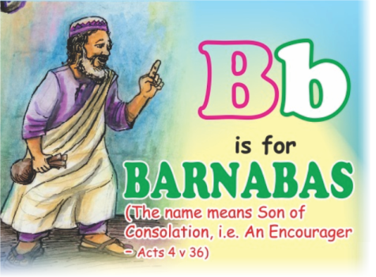
| His real name is Joses or Joseph | |
| He encouraged many Christians and non Christians to walk in the way of God. | |
| He sold his property to help other Christians in Jerusalem. |
LESSONS:
| We should tell people to follow God. | |
| God wants us to give the things we have for His work. |
Rearrange these words from the back:
1. sabanrab
2. snaitsirhc
1. sabanrab
2. snaitsirhc
2
« Previous Page
≡
Menu
Menu
»
Next Page
Next Page
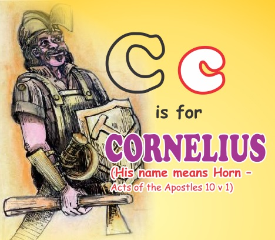
| He was a Roman Army officer. | |
| Although he was not an Israelite, he loved God very much. | |
| He was very faithful, prayerful and he helped people who were in need. |
LESSONS:
| God loves every one equally. | |
| No matter our tribe / origin, we must learn to love God with all our heart. |
Cornelius was a soldier, list 3 weapons a Roman soldier can carry:
3
« Previous Page
≡
Menu
Menu
»
Next Page
Next Page
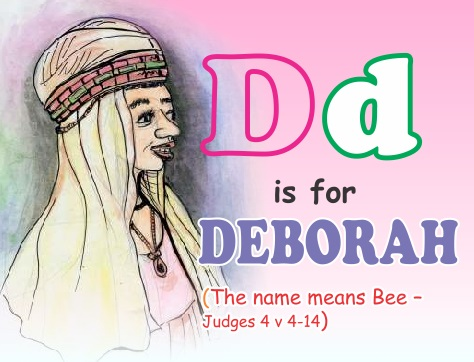
| She was a woman God had chosen to be a leader and judge of Israel, even in the time of war. | |
| She was a good counselor, adviser and mediator. | |
| She was a prophetess of God and had ability to organise people and events. |
LESSONS:
| We all must be useful to God and other people. | |
| We all, (boys and girls) must strive to be wise leaders. |
Deborah mean bee. Draw a Bee or Fly
4
« Previous Page
≡
Menu
Menu
»
Next Page
Next Page
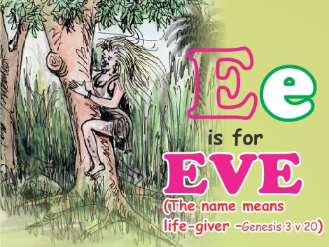
| She was the first woman that God created. | |
| Every person on earth come from her. | |
| Adam and Eve was disobedient to God’s word. | |
| She allowed Satan to deceive her alongside her husband to eat the forbidden fruits because of greed. |
LESSONS:
| We must choose to be obedient to God and to our parents always. | |
| We must be satisfied with whatever God has given us. |
When you disobey your parents, mention three types of
punishments you may receive:
5
« Previous Page
≡
Menu
Menu
»
Next Page
Next Page
| He was the Roman Governor of Judea. | |
| The Jews brought Paul to him to be judged. | |
| His reign brought peace and excellent reforms to Judea. | |
| Pontius Pilate had ruled in the same position before him. | |
| His wife was a Jewish woman called Drusilla. |
LESSONS:
| He was a good ruler whose reign was peaceful and prosperous and should be emulated by all who are in the position of authorities. | |
| He married a Jew, though he was a Roman. | |
| We should never discriminate because every man/woman came from Adam; the first man God created. |
Felix mean HAPPY. Draw a happy face.
6
« Previous Page
≡
Menu
Menu
»
Next Page
Next Page
| He was visited by an angel of God who told him about God's assignment for him to deliver the nation of Israel from her enemies. | |
| He was not willing to take the assignment because he felt he was not qualified for the task. | |
| He was a courageous and decisive judge in Israel. |
LESSONS:
| Everybody must be ready for the call of God to fulfill his or her purpose and destiny. | |
| It is God that empowers those He calls to do His purpose. | |
| We must all be courageous to achieve success in life. |
Gideon was a warrior. Draw a Roman warrior
7
« Previous Page
≡
Menu
Menu
»
Next Page
Next Page
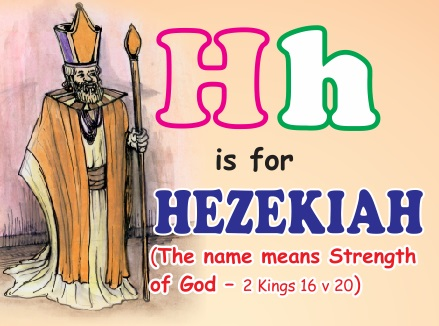
| He was the 13th King of Judah, and he reigned well following the example of his great-grandfather Uzzaiah | |
| He was very close to God. He encouraged others to do same | |
| His success later made him proud and disobedient. | |
| He did not plan well for the future and so caused his son who was king after him to fail. |
LESSONS:
| We must be ready to obey God all our life. | |
| We are not truly successful until we raise good leaders to continue after us. | |
| We, as parents or teachers of God’s word, must teach our children that regardless of our level of achievement, we need to remain obedient. | |
| As individuals, we must also learn to plan well ahead to avoid any eventful pitfall. |
Hezekiah was close
to God. Mention 5
things you can do to
be close to God:
8
« Previous Page
≡
Menu
Menu
»
Next Page
Next Page
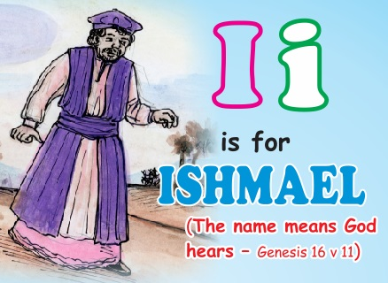
| ·He was the half brother of Isaac, born by an Egyptian servant of Sarah. His father was Abraham, his mother was Hagar | |
| God gave his name to his mother in a wilderness and later blessed him. | |
| His birth caused crisis between Sarah and Hagar | |
| He despised his brother Isaac by mocking him, and so was sent out of the home together with his mother by Sarah / Abraham. |
LESSONS:
| Do not despise your neighbour for any reason. | |
| God in his mercy still turns our mistakes into miracles because of His faithfulness. | |
| God still gave him a name despite the fact that he was illegitimate. | |
| In any circumstance or situation, we should always remember that God is mindful of us because He created us all. |
Ishmael was the
half brother of
Isaac. Mention
the names of
your brothers:
Use your dictionary to check the meaning of illegitimate
9
« Previous Page
≡
Menu
Menu
»
Next Page
Next Page
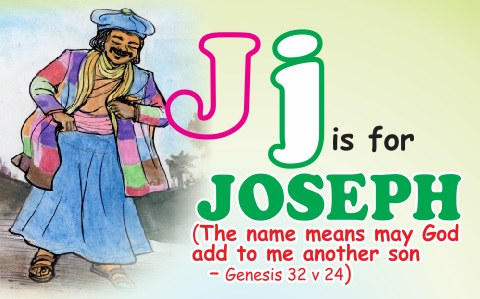
| He was the eleventh son of Jacob but born as the first child of Rachel. | |
| He was born when his father worked for Laban in Haran. | |
| He was sold into slavery by his brothers who became jealous of him because of his dream and the love Jacob had for him. | |
| He was the father of Manasseh and Ephraim born to him in Egypt by Asenath, an Egyptian woman. | |
| Though he was arrogant against his brothers as a teenager in his father's house, he had to learn humility through trials in Egypt. | |
| He developed great faith in God, who gave him the ability to interpret dreams, especially that of Pharaoh. | |
| Because of his wisdom and diligence in doing good, he was made the second in command in Egypt by Pharaoh. |
LESSONS:
| It is rewarding to be diligent in doing good. | |
| Being good and doing the purpose of God does not often save us from going through trial and temptations. | |
| The tribulations we go through in life are meant to humble us to follow God's words in our lives. | |
| When we stay loyal to God, He can turn around for good any evil that was done to us. |
Joseph was sold into slavery
by his brothers. He cried...
Short Drama:
Your friend:
I am jealous of
you, therefore
I have brought
people to come
and beat you.
You:
(crying ) Please
don't beat me
10
« Previous Page
≡
Menu
Menu
»
Next Page
Next Page
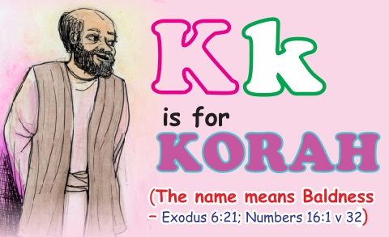
| He was a Levite priest who assisted in the daily duties of the tabernacle. | |
| He was very greedy as he wanted to take the position of Israel's leader from Moses and Aaron. | |
| He raised a rebellion against Moses and Aaron by working with Dathan and Abiram to challenge the authority of Moses and Aaron. | |
| He wanted to return the Israelites to Egypt. Moses spoke according to God's message and the ground opened and destroyed him, all including some members of his family. |
LESSONS:
| Do not envy anyone, especially your leaders. | |
| If you despise what you have, you may lose it and miss God. | |
| Do not rebel against God’s instructions and purpose. |
rebelled against ,
mention five punishments a rebel can receive.
11
« Previous Page
≡
Menu
Menu
»
Next Page
Next Page
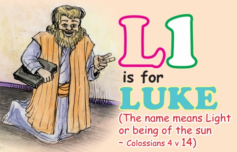
| He was a medical doctor; many hospitals are now named after him. | |
| He was a very compassionate and loving person. | |
| He was a very humble and faithful companion to Apostle Paul. | |
| The gospel of Luke and the Book of Acts of the Apostles were written by him | |
| He was a Gentile. |
LESSONS:
| Do not despise the word of God because of your high educational status (or as a scientist). | |
| Learn to commit yourself to the task God has for you and to humanity. | |
| Being a Gentile does not stop you from having a deep relationship with our God. | |
| Be loyal and courageous in the face of challenges of life. |
Luke means LIGHT or Being of the SUN.
Draw a smiling Sun with a nose, eyes,
mouth and teeth and paint it.
12
« Previous Page
≡
Menu
Menu
»
Next Page
Next Page
| He was born in Africa according to Bible history. | |
| He was a companion of Paul in evangelism. | |
| He preached in some African, Asian and European countries such as Egypt, Libya, Cyprus, Rome etc after the death of Paul. | |
| He wrote the Gospel of St. Mark. | |
| He abandoned Paul and Barnabas during their first missionary journey. | |
| With the patience of Barnabas who gave him a second chance, he was able to accomplish much for God. |
LESSONS:
| Your place of birth or position does not stop you from evangelizing. | |
| We grow in God through negative and positive acts. | |
| Understanding and encouragement can turn a person's mistakes to miracles. | |
| As individuals we can make mistakes but we should not allow our mistakes to stop us from following God. Always remember to err is human, and to forgive is divine. |
Mark in Latin mean
HAMMER. Draw a
big hammer.
13
« Previous Page
≡
Menu
Menu
»
Next Page
Next Page
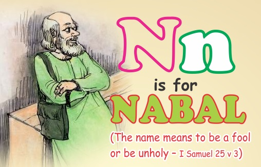
| He was the great grandson of Caleb the partner of Joshua. | |
| He was a very wealthy man who had thousands of sheep and goats. | |
| He was an ungrateful, greedy and saucy man who insulted David and his servants who helped him. | |
| Abigail the beautiful and intelligent woman, who later became the wife of David, was first married to Nabal. | |
| He was a drunkard. |
LESSONS:
| We need to be generous to those whom we relate with or who work for us / help us to prosper | |
| There is a need for us to be courteous to everybody, always. | |
| Be moderate whenever you have much or little so that you do not mess up. |
Nabal was very wealthy.
Draw a Naira or Dollar note.
Draw a Naira or Dollar note.
14
« Previous Page
≡
Menu
Menu
»
Next Page
Next Page
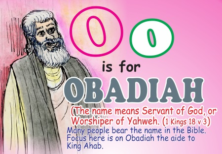
| He was Governor of the palace of King Ahab. | |
| He believed in God, though he served an evil king and queen | |
| He hid and fed 100 prophets of God in two caves to protect them from the wicked Queen Jezebel. | |
| He risked his life to save God's people. | |
| He feared God and honoured His Prophet Elijah. |
LESSONS:
| Even in a godless environment, we must not shy away from standing for God. | |
| God will always protect those who trust in Him and are ready to risk their lives for Him. |
Obadiah aided God's Prophets from
the wicked Queen Jazeebel.
Draw a wicked woman.
Draw a wicked woman.
15
« Previous Page
≡
Menu
Menu
»
Next Page
Next Page
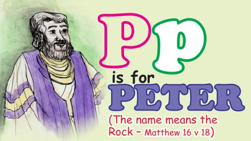
| His name was Simon, son of Jonas before Jesus named him Peter. | |
| His new name symbolises that he was the “Rock”: “Thou art Peter, it is upon Peter’s confession that the church is to be built.” | |
| He was a very diligent fisherman before Jesus called him. | |
| He exercised faith and walked on water with Jesus. | |
| He saved thousands of souls and healed many in his ministry. | |
| After Jesus was arrested, he denied knowing Him three times just as Jesus foretold. | |
| He later repented of his mistakes. |
LESSONS:
| God will always change our Character to become Christ-like in order to use us effectively on earth. | |
| When God calls us to His service, we must respond by surrendering our life and everything to Him. | |
| We can truly demonstrate the power of God on earth when we believe that with Him, all things are possible. | |
| God will always forgive our sins, when we repent because He knows of it before we commit it. |
Peter was a fisherman. Draw and paint a fish and a hook used to catch fish.
16
« Previous Page
≡
Menu
Menu
»
Next Page
Next Page
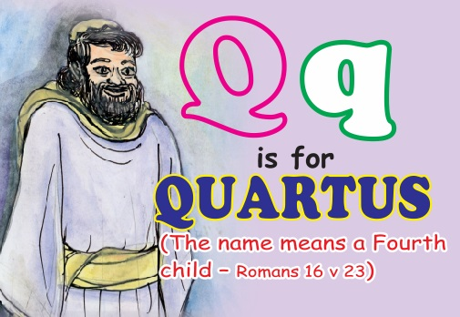
| He was a good Christian who loved the Lord and his brethren. | |
| He demonstrated that there is no distance in the Spirit by sending greetings through Paul to his brethren in Rome, from his base in Corinth. |
LESSONS:
| We must never neglect the fellowship of brethren. | |
| We can still reach out to our brethren in distant places through greetings and prayers. |
Quartus cared for the disciples of Jesus. Mention
some friends you have helped in the past.
17
« Previous Page
≡
Menu
Menu
»
Next Page
Next Page
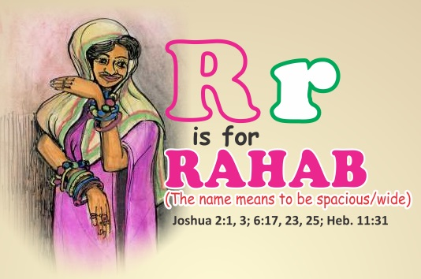
| She was a prostitute in Jericho, a nation of unbelievers. | |
| She however, showed a deep love for God and confessed this openly. | |
| She also displayed her love for God by hiding the two Israelite spies sent to spy Jericho by Joshua. | |
| She was one of the only two women listed in the heroine of faith in Hebrews 11. | |
| She was the mother of Boaz and therefore, a descendant of David and by extension, Jesus. |
LESSONS:
| She showed good example of unselfishness. | |
| Her uncommon faith in God's ability to deliver gave her a place in the Bible's Hall of fame. | |
| God can clean up the most dirtiest aspect of our lives / characters if we give Him the chance. |
Rahab was a prostitute in (ohcirej).
Rearrange the word in bracket from
the back:
18
« Previous Page
≡
Menu
Menu
»
Next Page
Next Page
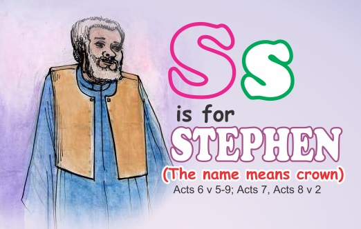
| He was a man full of faith and Christ-like character. | |
| He was very wise and did a lot of signs and wonderful miracles. | |
| He was very bold to confront the council of the synagogue and their false witnesses that told lies against him. | |
| He was stoned to death by his accusers, but he never feared death. Instead, he prayed for his assailants. | |
| He demonstrated the power of love as Jesus did, as he asked God not to lay the sin of his death against his killers including Saul (later Paul) who was an accomplice. |
LESSONS:
| You can start serving God in a small way to prepare you for greater assignments. | |
| We all must be full of faith and boldness in serving God and His people. | |
| In the face of opposition, we must withstand all odds and not fear death. |
Stephen means crown. Draw a King wearing a crown.
19
« Previous Page
≡
Menu
Menu
»
Next Page
Next Page
| He came from the lineage of a Christian family consisting of his mother and grandmother who stood for righteousness. | |
| His Christ-like character greatly endeared him to Apostle Paul who made him his spiritual son. | |
| He was a highly motivated evangelist. | |
| The two letters written to him by Apostle Paul are part of the New Testament books. |
LESSONS:
| The family background is very important in the task of training up a child in the way he or she should go, in order for him / her not to depart from the ways of the Lord. | |
| The position of a spiritual father in the maturity of a Christian believer cannot be overlooked. | |
| We are today being encouraged by the letters Paul wrote to Timothy to encourage him as he went through various challenges of life. |
Timothy was an evangelist.
Mention the number of people
you have told about Jesus.
Draw the picture of Jesus
-
Type the names of the people you have told about Jesus
20
« Previous Page
≡
Menu
Menu
»
Next Page
Next Page
| He was a very loyal and forthright soldier in the special squad of king David's army. | |
| His wife Bathsheba was unfortunately seduced by David who impregnated her . | |
| He was very disciplined and so refused to sleep with his wife while his fellow soldiers were at war. | |
| His death was arranged by David to cover up his evil action with his wife. |
LESSONS:
| We should tell people how to follow God. | |
| God wants us to give the things we have for his work. | |
| God wants us to be loyal in the place of our assignment. | |
| We should learn to respect other people’s boundaries to avoid soiling our hands with sins as an attempt to cover-up for one sin which can lead to committing another |
Uriah was a hard working soldier. Mention the names of your
friends who are hard working and what they have done.
21
« Previous Page
≡
Menu
Menu
»
Next Page
Next Page
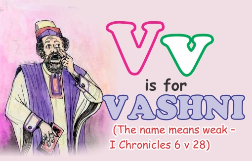
| He was the eldest son of prophet Samuel (He was also called Joel – I Samuel 8 v 2). | |
| Both Vashni and his brother Abiah were known to be very corrupt as they perverted justice in Beersheba where they were judges | |
| His attitude and that of his brother made the elders of Israel to ask for a king from Samuel, rather than have his sons rule over Israel. |
LESSONS:
| Our children, who are not walking in the ways of the Lord can cause us to loose the kingdom of God on earth. | |
| Corruption / subjugation of justice in a society can cause the people to rise against any leader. |
Use the letter "V" to form four words in the Bible
22
« Previous Page
≡
Menu
Menu
»
Next Page
Next Page
| The word is the personality of God to whom mankind relates. That is, the image of God in man. | |
| He is the one that made all things, seen and unseen. | |
| The word Himself was made flesh in Jesus who came to die to redeem our souls from condemnation. | |
| The written word (Logos) and the spoken word (Rhema) have been revealed to us as evidence that He exists or lives forever. |
LESSONS:
| The word must become flesh in us for us to become true sons of God, as we allow Him to govern our lives. | |
| Every word that God has spoken to us is a promise that will surely come to pass. | |
| Our flesh may die, but the word of God never dies. | |
| The word of God must be meditated upon day and night. |
Jesus is referred to as The Word of God. Mention some other
names of Jesus Christ.
23
« Previous Page
≡
Menu
Menu
»
Next Page
Next Page
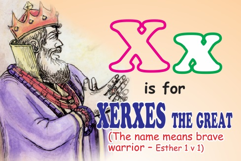
| His common name was Ahasuerus. | |
| He was the fifth ruler of Persia who ruled over 127 provinces from India to Ethiopia. | |
| He was one of the richest people in the world because Persia was a world power. | |
| He was proud and irrational. |
LESSONS:
| We must be careful in life because excessive wealth and power can make us to misbehave. | |
| Making important decisions under the influence of alcohol may prove to be a disaster | |
| Our decisions should not be influenced by position, rather; rationally to benefit all that are concerned. |
Xerxes was a proud king. Rearrange the following sentences:
king was proud a Xerxes
Good proud is it to not be
Another word for proud (atrnargo)
Good proud is it to not be
Another word for proud (atrnargo)
24
« Previous Page
≡
Menu
Menu
»
Next Page
Next Page
| He is the creator of Heaven and Earth. | |
| He has the whole world in His hands. | |
| He is a miracle working God. | |
| He can do all things. | |
| He is the King of Kings, and He reigns forever. |
LESSONS:
| Every language has its own unique name for God Almighty. | |
| His principles are perfect | |
| No mistake can be found in Him or with Him. | |
| He is the Author and the Finisher of our Faith. |
Mention all the other names of God you know:
25
« Previous Page
≡
Menu
Menu
»
Next Page
Next Page
| He was the writer of the Book of Zachariah. | |
| He was an Old Testament prophet who prophesized many times about Jesus Christ, and was the grandson of Iddo the prophet. | |
| His messages to the nation of Israel caused him to attain great spiritual heights and rebuild the temple of God. |
LESSONS:
| There is no one that will yield himself to God that He will not use mightily. | |
| We all must be hearers of God's word and doers to benefit maximally from God. | |
| We must also learn to give account of God’s wonders for the generation after us to learn from the wonders of God, as faith cometh by hearing the word of God. |
- Rearrange:
- hairahcez
- tehporp
- elpmet
26
« Previous Page
≡
Menu
Menu
»
Next Page
Next Page
PUZZLE
The A-Z of Bible Characters for Children stories that you have
studied have been hidden in the puzzle below. See how many you can find!
Adam Barnabas Cornelius Deborah Eve Felix Gideon Hezekiah Ishmael
Joseph Korah Luke Mark Nabal Obadiah Peter Quartus Rahab Stephen
Timothy Uriah Vashni Word of God Xerxes Yahweh Zechariah
You can take a screenshot of the Puzzle, transfer it to WhatsApp, then draw lines to trace the characters listed in the puzzle. However, to get answers for the puzzle, go to our facebook page
https://m.facebook.com/A-Z-of-Bible-Characters-for-Children-167420737064869/?ref=bookmarks
« Previous Page
≡
Menu
Menu
»
Next Page
Next Page

« Previous Page
≡
Menu
Menu
»
Next Page
Next Page